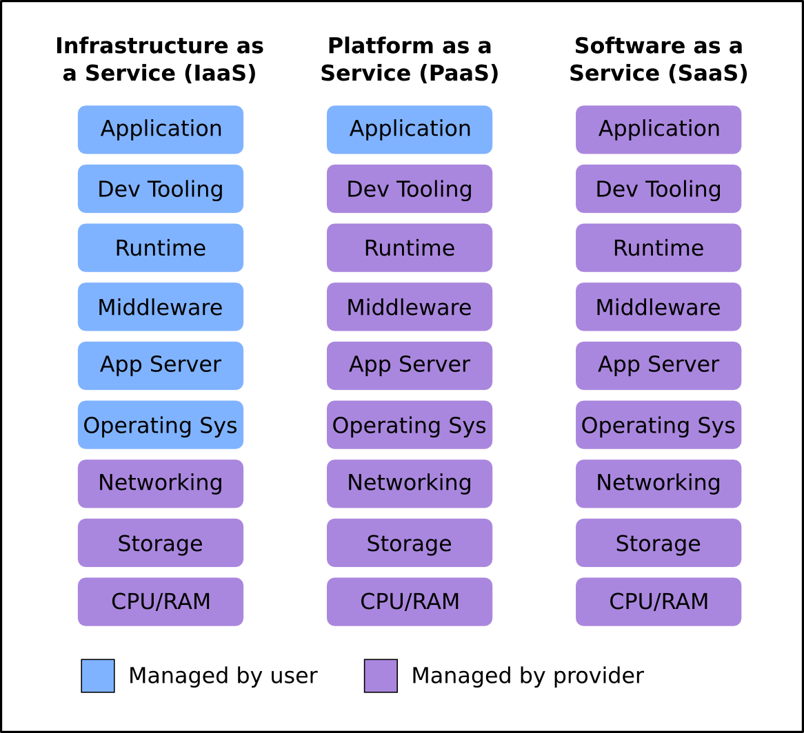

Make Haste
Fast Track to Functional Thinking
Katie Miller (@codemiller) OpenShift Developer Advocate at Red Hat
What's Functional Programming?
Why Functional Programming?
Why Haskell?
What's OpenShift?
Puzzle Pieces
- Web framework: Scotty
- DB interaction: postgresql-simple package
- HTML generation: Blaze HTML
- CSS generation: Clay
- Haskell-to-JavaScript compiler: Haste
Show Me The Code!
What Can We Learn From This?

Make Haste
http://haste.codemiller.com
Katie Miller (@codemiller) OpenShift Developer Advocate at Red Hat